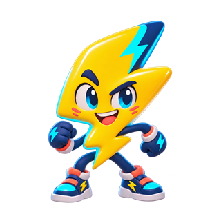
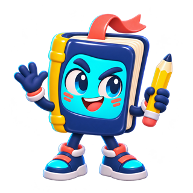

El profe arma la clase
Elegí la materia, creá tus roscos con preguntas propias y compartí el código de tu clase.
Tu materia tiene mucho juego.
Creá desafíos con tus preguntas. Sumá a tu curso con un código y hacé que cada letra abra una conversación.
Probá una partida con PRISMO, sin cuenta

 Un curso. Mil formas de pensar.
Un curso. Mil formas de pensar.Creá tu cuenta de alumno o ingresá para unirte.
Del tema al desafío
Elegí la materia, creá tus roscos con preguntas propias y compartí el código de tu clase.
Cada alumno entra con su cuenta, se une con el código y encuentra los desafíos que asignaste.
Leé la pista y respondé la palabra que empieza con esa letra o la contiene. Si te trabás, pasapalabra. Al terminar, mirá tus aciertos y el ranking.
En la misma clase o cada uno a su ritmo. Proyectá el piloto por equipos o asigná roscos para resolver individualmente.
Conocé a la colección
Elegí tu materia para empezar a preparar una clase. También podés crear una de cualquier otro tema.
Para quien enciende la clase
Creá varias clases, reutilizá tus roscos y elegí qué desafío encuentra cada curso.
Crear mi cuenta de profePara quien se anima a responder
Sumate a tus clases, encontrá nuevos desafíos y practicá a tu ritmo con tu alias.
Crear mi cuenta de alumnoPodés jugarlo sin registrarte. El código de clase se usa arriba.